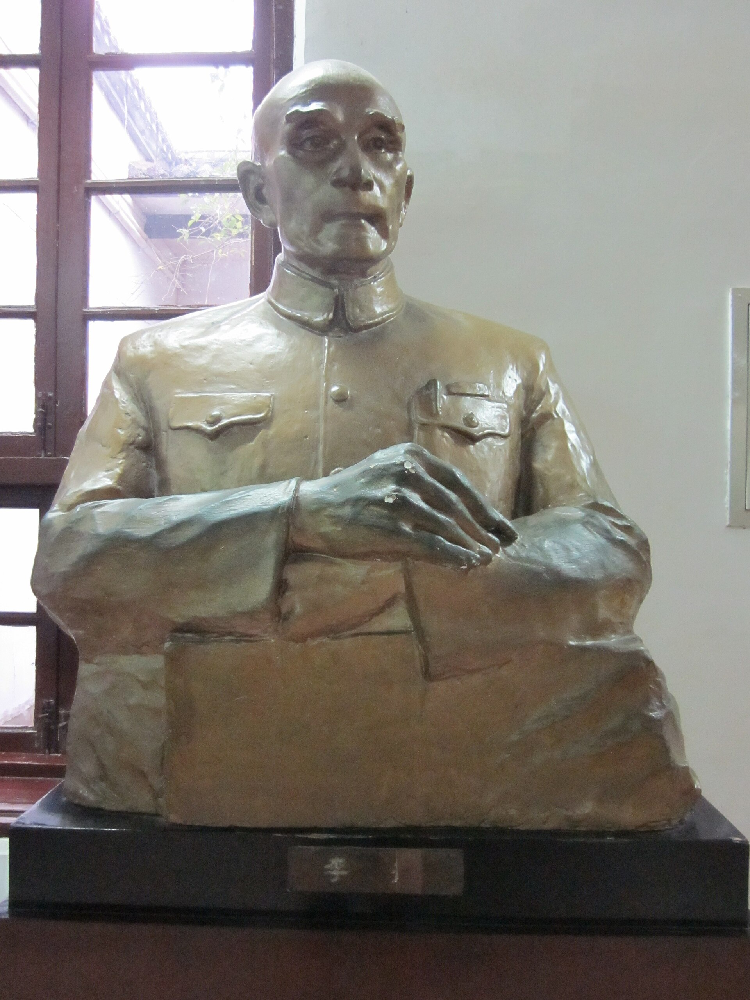

第 20 章
新式学堂的军功资本
时务学堂的创办名单，读起来像一份湘军第二代成员的联谊录。这不是一个修辞判断。光绪二十三年（1897年）秋，湖南巡抚陈宝箴会同署按察使黄遵宪、学政江标，在长沙小东街租下一处院落，挂出

“时务学堂”匾额。
列名发起人的熊希龄、蒋德钧、谭嗣同、王铭忠、张祖同五人，若追溯其父辈谱系，便显现出一个隐秘的结构。熊希龄的父亲熊兆祥虽以医术闻名，但其家族在湘西的崛起与湘军平定苗乱后善后局主持的土地发卖直接关联——熊家在凤凰厅购置的田产，正是那批战后清查发卖的“逆产”的一部分。蒋德钧的父辈蒋凝学是湘军水师旧将，咸丰年间随彭玉麟转战长江，战后在湘潭购置大量田产，成为湘潭蒋氏宗族的核心资产。王铭忠家族在长沙的典当业，其初始资本可追溯至其父随曾国荃攻克安庆时分得的战利品。
这份名单不是偶然的社交聚合。它是咸同年间那场战争积累的财富与政治网络，在三十年后向新式知识领域进行的一次集中释放。这一判断直接挑战了关于湖南近代教育起源的通行解释。
长期以来，论者倾向于将湖南新式教育的兴起归因于全国维新思潮的传播，或传教士在通商口岸的教育示范。这种解释面临一个无法回避的事实：湖南最早的、最具规模的新式学堂，其发起人不是传教士，不是沿海口岸归来的买办，而是湘军功勋家族的直系后代。这些学堂在地理分布上高度集中于湘乡、长沙、湘潭等湘军兵源与财富回流的密集区，而非沿江开埠的岳阳，或传教士活动频繁的衡州。如果维新思潮是主要驱动力，为什么湖南新式教育的地理重心与维新宣传的网络并不重合？如果传教士是主要推动者，为什么教会学校始终停留在边缘位置，从未达到时务学堂、明德学堂那样的规模与影响力？
答案不在风气，而在结构。时务学堂的创办经费首期募集约七千两。这笔钱来自几个渠道：陈宝箴从省署公款项下拨付三千两，其余由发起人认捐。表面看，这是一次普通的官绅合办。
但拆解那三千两“公款项”的来源，便会发现其中相当部分来自湖南厘金局的“外销”项下——也就是前章所述，湘军集团通过善后局系统截留、绕过户部奏销程序的那笔地方财政资金。光绪二十二年，户部曾驳斥湖南厘金外销款项，要求逐项奏明用途。湖南巡抚的回应是将这些款项列入“书院膏火”“缉私经费”等名目，以地方公事为由拒绝详细奏报。时务学堂的创办时间，恰好在此事之后一年。时间上的接续并非巧合：同一笔地方截留资金，在改换名目后，从维持旧式书院转向支持新式学堂，完成了第一次大规模的用途转向。
但公共资金只是其中一条线索。更关键的，是私人军功资本的注入。时务学堂的捐款名册上列有数十位“乐捐绅士”的姓名与金额。这份名册本身便是一份湘军第二代成员的索引。湘潭欧阳氏捐银五百两，其家族财富来源于欧阳利见在湘军水师中的战功与战后在湘潭的田产购置。
湘乡刘氏捐银三百两，其父刘锦棠虽以平定新疆闻名，但刘氏家族在湘乡的根基始于刘锦棠叔父刘松山随曾国藩出征时积累的第一笔军功赏银——这笔钱在同治初年不过数百两，经过两代人的田产经营与典当生息，到光绪中期已膨胀为一个庞大的家族资产组合。长沙朱氏捐银二百两，其祖父朱洪章是曾国荃部将，同治三年攻克天京时率先攻入城内，战后携回大量财物，在长沙开设钱庄，到光绪年间已成为长沙金融业的重要力量。
这些捐款人的共同特征并非偶然。他们的父辈或祖辈在咸丰至同治年间通过湘军体系获得财富，战后将这些财富转化为田产、典当、钱庄等传统资产形式。
到了光绪中期，这些家族面临着同一个结构性压力：科举正途的通道正在收窄。湖南在咸同之际因湘军军功获得大量保举官衔与捐纳功名，候补官员严重积压。光绪二十年以后，一个湘军将领的子孙即便获得举人功名，也可能等待十年以上才能补得实缺。
甲午战败从根本上动摇了科举取士的合法性——一个连国家领土都无法保卫的制度，其选拔人才的权威必然受到质疑。到庚子国变后，这种质疑已从少数先觉者扩散到整个士绅阶层。这批军功世家的第二代发现自己站在一个交叉路口：父辈期望他们走科举正途以巩固家族地位，但科举本身正在变成一条越来越窄的死胡同。
时务学堂便是在这个压力点上应运而生。它的课程设置——经学、史学、算学、格致、外语——与旧式书院截然不同，明确指向一条绕过科举的新式知识路径。对于湘军第二代而言，这不是对父辈传统的背叛，而是在父辈提供的物质基础上为家族寻找新的上升通道。
这种心态在熊希龄筹办学堂期间与保守士绅的争论中表现得尤为清晰。反对者认为新式学堂“讲求西学，恐坏人心术”。熊希龄的回应策略耐人寻味：他没有从西学本身的价值进行辩护，而是列举了学堂发起人与捐款人的家族背景，指出“今日之学堂，实湘军忠烈之后所共举”。
这个辩护逻辑本身便揭示了时务学堂的合法性来源——它并非外来思想的舶来品，而是湘军遗产的内部转化。那些反对新式学堂的保守士绅面对这份名单时，很难将“湘军忠烈之后”斥为异端。
但代际冲突并不因此消弭。光绪二十四年政变后，时务学堂被迫停办，熊希龄被革职。学堂停办的原因表面上是朝廷查禁新学，但在湖南本地，真正推动查禁的力量恰恰来自部分湘军第一代将领及其家族保守派。这些老将认为子弟进入时务学堂学习西学，是对他们一生以武功博取的功名体系的背叛。在他们看来，家族的上升路径应当是：以军功获官，以官俸置产，以田产供子弟读书应举，以科举巩固家族地位。这是一条完整的闭环。新式学堂的出现打断了这个闭环的最后一步——它告诉这些家族的子弟，科举不再是唯一的出路，甚至不是最好的出路。
这种断裂在心理层面造成的冲击不亚于甲午战败本身：前者动摇了他们对国家的信心，后者动摇了他们对家族传承方式的信心。这份张力在明德学堂的创办过程中表现得更为尖锐。
光绪二十九年（1903年），胡元倓在长沙创办明德学堂。胡元倓的父亲胡林翼是湘军第一代核心将领，咸丰年间官至湖北巡抚，与曾国藩、左宗棠齐名。胡元倓本人却选择了一条与其父截然不同的道路：他放弃科举，赴日本留学，回国后倾尽家财创办新式学堂。
明德学堂的初始资本主要来自胡氏家族在益阳的田产收入——这些田产正是胡林翼在咸丰年间以军功所得购置的。
胡元倓的决定在家族内部引发了激烈反对。胡氏宗族的长辈认为胡林翼一生以科举正途入仕、以军功获封，其子孙理当沿着同样路径前进。胡元倓不仅自己放弃科举，还要将家族田产投入新式学堂，这在族中长者看来是对胡林翼遗产的背叛。胡氏族谱中保留了一份光绪三十年族务会议的记录，其中明确记载了族人对胡元倓“鬻产办学”的质疑：“先中丞公一生以科举显，以武功名，今若尽弃其道，何以为子孙法？”这句话的措辞值得细读。
“先中丞公”是对胡林翼的尊称，“以科举显，以武功名”是对其一生功业的概括，“尽弃其道”则是对胡元倓行为的定性——不是继承，而是抛弃。胡元倓的回应策略与熊希龄如出一辙：他没有从西学的价值进行辩护，而是强调明德学堂的办学宗旨是“磨血育人”，培养的是能够挽救国家危亡的人才——这正是胡林翼那一代湘军将领以武力所追求的目标，只是换了一种方式。
这一策略在部分湘军旧将中获得了共鸣。明德学堂的捐款名单上出现了多位湘军第一代将领的姓名：谭钟麟（谭延闿之父，湘军旧将）捐银一千两，黄忠浩（湘军后期将领）捐银五百两，陈海鹏（湘军水师旧将）捐银三百两。这些老将的捐资行为表明他们并非铁板一块地反对新式教育，而是在代际更替中出现了分化：一部分人坚持科举路径，另一部分人则认识到国家危亡之际，家族财富必须寻找新的配置方向。
明德学堂的经费结构清晰地呈现了军功资本转化的两条路径的合流。学堂常年经费的来源包括：胡氏家族田产岁入约二千两；
湖南厘金局从“外销”项下每年拨付一千二百两，名目是“补助私立学堂”；谭钟麟等旧将的私人捐资约八百两；以及学生学费收入。在这四条来源中，前三条都可以直接追溯到湘军的战利品回流与厘金截留体系。
厘金局拨付的那一千二百两尤其值得注意：这笔钱在奏销册上列为“缉私经费”，实际却流入了明德学堂的账户。同样的操作手法与光绪二十二年户部驳斥的“书院膏火”完全一致，只是名目从“膏火”变成了“补助学堂”。这套财政操作的核心机制始终未变：利用厘金征收体系中“外销”款项不入户部奏销的制度空隙，将地方截留资金注入地方士绅控制的教育机构。
楚怡学堂的案例则揭示了军功资本转化的第三条路径。宣统元年（1909年），陈润霖在长沙创办楚怡学堂。陈润霖的父亲陈士杰是湘军早期幕僚，咸丰年间随曾国藩办理营务，战后历任地方知府，积累了大量财富。与胡元倓不同，陈润霖并未经历激烈的家族冲突。
原因在于陈士杰本人晚年便已开始将家族财富从田产转向新式事业：他在光绪二十四年投资了湖南最早的机器碾米厂，又于光绪二十八年参与创办了湖南矿务局下属的铅锌矿。陈润霖创办楚怡学堂是这条转化路径的自然延伸。
楚怡学堂的初始资本约五千两，全部来自陈氏家族的私人投资。学堂的课程设置以实业教育为特色，开设了化学、物理、测绘、采矿等课程，直接服务于湖南矿业的技术需求。这种课程设计并非偶然：陈氏家族在矿务局的投资需要技术人员；楚怡学堂培养的学生毕业后可以直接进入矿务局工作。
这是一条完整的资本循环：军功资本转化为矿业投资，矿业投资产生技术需求，技术需求催生新式学堂，新式学堂培养的人才又服务于矿业资本。在这个循环中，新式教育不再是脱离经济基础的纯粹知识传播，而是资本增值链条上的一个功能性环节。将时务学堂、明德学堂、楚怡学堂并置观察，可以识别出军功资本向新式教育转化的三种模式。
第一种是时务学堂模式：以公共资金（厘金外销）为主、私人军功捐资为辅，面向全省招生，课程偏重政治与思想启蒙。这种模式的特点是风险分摊——多个家族共同出资，借助官方平台运作，任何一个家族的损失都在可控范围内。
第二种是明德学堂模式：以单一军功世家的私人资本为主、厘金补助为辅，课程兼顾经学与西学，试图在科举与新学之间寻找平衡。这种模式的风险更为集中——胡氏家族承担了主要投入，也因此拥有更大的控制权。第三种是楚怡学堂模式：完全由军功世家的私人资本创办，课程直接服务于家族在新式产业中的投资需求，教育与资本形成闭环。
这种模式的风险最小——学堂培养的人才直接进入家族企业，教育投资的回报周期最短。
这三种模式的差异取决于创办者家族在“红利转化链”中所处的阶段。时务学堂的发起人大多是其家族军功资本转化的第一代——他们刚刚从科举路径转向新式教育，需要借助公共资金来分摊风险。
明德学堂的胡元倓则处于第二代——他继承了完整的家族田产，可以独立承担学堂的初始投入，但仍需厘金补助维持常年运营。楚怡学堂的陈润霖则代表了第三代——其家族已完成从田产到工商业的资本转化，学堂本身就是这个转化链条的一个环节，无需依赖公共资金。这个代际序列不是时间上的偶然排列，而是资本形态演进的逻辑展开：从土地到商业再到工业，每一阶段对知识的需求不同，对教育的投入方式也不同。
这种代际差异在湖南新式学堂的地理分布上留下了清晰的印记。光绪二十三年至宣统三年间，湖南共创办新式学堂约二百所。若将这些学堂按其创办资金的主要来源分类并标注所在地，便显现出一个显著的地域鸿沟：以私人军功资本为主要来源的学堂高度集中于湘乡、湘潭、长沙三县及周边地区——这正是湘军兵源与财富回流的密集区。以厘金外销公款为主要来源的官办学堂则分布较广，但其经费规模与持续性取决于该县在厘金征收体系中的地位。
那些既非湘军兵源地、又不在厘金征收网络内的偏远州县——如湘西南的城步、绥宁，湘西北的龙山、桑植——在新式学堂的创办浪潮中几乎完全缺席。这一地域鸿沟不能用“风气开通程度”来解释。城步、绥宁等地并非风气闭塞——恰恰相反，这些地区在光绪年间已有传教士活动，部分地方甚至设有教堂与教会小学。
但这些教会学校规模极小，影响限于少数教民家庭，无法与长沙、湘潭等地由军功资本支撑的规模化新式学堂相提并论。传教士的影响在湖南新式教育的整体结构中是一个边缘变量而非主要驱动力。
如果传教士是主要推动者，新式学堂应当集中在传教士活动最活跃的地区；但事实恰恰相反——传教士活动最活跃的衡州、常德等地在新式学堂的数量与规模上远不及长沙、湘潭。地域分布的证据不支持传教士驱动的解释。
反方解释所强调的“全国性改革”因素——如维新运动、清末新政——确实提供了新式学堂合法化的制度框架。没有朝廷的兴学诏书，湖南地方官员无法公开将厘金外销拨付给新式学堂。
但制度框架只是必要条件而非充分条件。全国各省都在执行同一套兴学政策，为什么湖南的新式学堂数量与规模远超过同等经济发展水平的内陆省份？为什么湖南能够出现时务学堂、明德学堂这样具有全国影响力的私立学堂？答案必须回到湖南的特殊性：咸同年间积累的巨额军功资本在甲午战败与庚子国变后寻找到了新式教育这个释放通道。
这笔资本的规模可以从一个侧面得到印证。光绪三十一年湘潭一位退休厘金账房保存的实收实支清册显示，仅湘潭一县从同治三年至光绪三十年通过厘金“外销”项下拨付给各类学堂、书院的款项累计超过十二万两。
这还只是公共资金部分。若加上湘军将领家族的私人捐资——如胡元倓投入明德学堂的田产收入、谭钟麟等人的捐资——湖南新式教育在清末最后十五年间吸收的军功资本总量保守估计应在三十万两以上。这笔钱在当时的购买力足以支撑数十所学堂的常年运营。
以明德学堂为例，其每年二千两的田产收入加上一千二百两的厘金补助，总计三千二百两的常年经费可以支付二十余名教员的薪金、二百余名学生的伙食补贴以及校舍维护与教学设备的购置。三十万两意味着可以同时支撑近百所同等规模的学堂。
但资本转化从来不是平滑的线性过程。每一笔从军功财富流向新式学堂的资金都意味着一个家族内部的博弈与抉择。
光绪三十二年湘乡曾氏家族爆发了一场著名的族务纠纷。曾氏是曾国藩的宗族，在湘乡拥有大量田产与族产。这一年族中部分年轻子弟提出将族产的一部分收益拨付给正在筹建中的湘乡中学堂以支持新式教育。这一提议遭到族中长辈的强烈反对，理由是“族产乃先人血汗所积，当用于祭祀与族中贫寒子弟科举之资，不可移作他用”。纠纷最终以妥协告终：族产不动，但允许年轻子弟以个人名义向学堂捐资。
这场纠纷的实质是“红利转化链”在代际传递中遭遇的制度性摩擦——旧有的宗族财产管理制度设计用于维持祭祀、科举与族内救济，无法兼容新式教育这一全新的资本需求。
类似的摩擦在湖南各县的湘军功勋家族中反复上演。每一次摩擦的结果各不相同：有的家族完成了转化，将田产收益或商业利润注入新式学堂；有的家族固守传统，将财富锁定在田产与科举路径上；还有的家族则分裂为两派，各自沿着不同方向配置家族资源。
这些微观层面的博弈在宏观上塑造了湖南新式教育的地域分布与结构特征：那些军功资本集中且代际转化成功的县域——长沙、湘潭、湘乡——成为新式教育的中心；那些军功资本薄弱或代际转化受阻的县域则在新式教育浪潮中被边缘化。
光绪三十一年废除科举的诏书加速了这一分化。诏书颁布后旧式书院失去制度依托，其田产与经费面临重新分配的命运。在这场重新分配中那些已经拥有新式学堂的县域能够迅速将旧书院资产转移到新学堂名下进一步巩固其优势；而那些尚未建立新式学堂的县域则眼睁睁看着本县的书院田产被省署提调拨付给外县的新式学堂。湖南教育资源的鸿沟在这一年之后急剧扩大。
以湘乡县为例：该县在科举废除前已有湘乡中学堂与数所小学堂，能够迅速吸收本县旧书院的田产与经费；而邻近的安化县因未建立新式学堂，其旧书院田产被省署提调拨付给了长沙的学堂。一县之得正是另一县之失。
回到时务学堂的那份创办名单。光绪二十三年当熊希龄、蒋德钧、谭嗣同等人在名单上签名时他们或许并未意识到这份名单标记的是一个历史转折点：湘军第一代以武力积累的财富与权力正在经由第二代之手转化为一种全新的资本形态——新式知识的生产与传播能力。这种能力将在随后的二十年间为湖南培养出第一批接受新式教育的学生，其中一部分人将在辛亥之后进入湖南的政治、军事与教育领域成为湖南自治运动的中坚力量。
但这份名单同时也标记了另一种东西：一种内在的局限。时务学堂的发起人与捐资者几乎全部来自湘军功勋家族及其姻亲网络。这份名单上没有农民子弟，没有手工业者，没有小商人。新式学堂的创办从一开始就带着深刻的阶层烙印。
军功资本转化而来的新式教育在打破旧式科举的封闭性的同时又制造了一种新的封闭性——它向那些拥有军功遗产的家族敞开了大门，却将那些在咸同年间同样为战争付出了生命与劳役却没有积累起财富的底层家庭挡在了门外。
这种阶层烙印在楚怡学堂身上表现得尤为触目。陈润霖创办楚怡学堂的五千两初始资本全部来自其父陈士杰在湘军幕府与地方官任上积累的财富。这笔财富的最终来源是咸丰年间湘军在长江流域征收的厘金、攻克城池后分得的战利品以及战后善后局发卖荒地的收益。楚怡学堂的每一块砖瓦都浸透着那场战争的血迹。当陈润霖的学生们在化学实验室里操作试管时他们脚下的土地是咸同年间无数士兵与民夫的尸骨换来的。
这不是道德评判而是结构分析。湘军战利品回流与厘金截留体系在长达半个世纪的时间里将战争红利持续注入湖南本地的宗族、田产、典当、钱庄，最终在清末最后十五年间通过新式学堂这一载体转化为知识生产与文化权力。
这个过程塑造了湖南在二十世纪初成为中国新思想策源地的物质基础，同时也决定了这种新思想的社会边界——它首先属于那些从战争中获利的家族的后代。
时务学堂停办后其校舍一度改为求实学堂后又改为湖南高等学堂。明德学堂则一直延续到民国成为湖南最著名的私立中学之一。楚怡学堂在辛亥革命后改为楚怡工业学校培养了大批工程技术人才。这三所学堂的命运是军功资本转化成功的标志性案例。
但在这些成功案例的阴影之下是那些未能完成转化的家族与县域——它们的沉默同样构成了这段历史的一部分。
光绪三十一年那份湘潭厘金账房保存的实收实支清册在最后一页记载了一笔拨付给常德堤工总局的款项。拨付理由是“堤工岁修”，金额为二千两。但这笔钱的实际用途据账房在附注中注明是“拨充常德府中学堂开办经费”。同样的操作手法——以水利工程的名义将厘金外销注入新式学堂——在湖南各县被反复使用。
这套手法的核心是湘军集团在战后建立的善后局—厘金局财政系统在失去军事职能后转化为地方财政的隐蔽管道，将公共资源持续导向特定阶层与特定地域的教育投资。当这份清册被退休账房小心翼翼地保存下来时它所承载的秘密已经超越了厘金外销的真实规模。它记录的是一整套制度性安排的运作痕迹——这套安排使得一场结束于同治三年的战争在光绪三十一年的湖南仍然通过学堂经费的拨付、宗族田产的收益、典当钱庄的利息持续地塑造着谁能接受教育、谁能在新式知识体系中获得位置。
这份清册的保存者并不知道他锁在木匣中的这些纸张将在二十年后成为理解湖南新式教育地域鸿沟的关键证据。他只知道这些数字不可示人——因为一旦公开便会暴露厘金外销的真实去向，暴露那些以“堤工”“缉私”“膏火”为名注入新式学堂的公款究竟流向了哪些人的口袋又最终滋养了哪些人的头脑。
这些数字所指向的不只是财政违规的问题，而是一种新的社会权力结构的生成过程——在这个过程中，战争的遗产通过教育的管道完成了从暴力到知识的形态转化，而那些被排除在这个管道之外的人甚至没有意识到自己被排除的事实。这份清册安静地躺在木匣里，等待着一个尚未到来的读者。